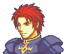

Support Rank C

エレン！

まあ ツァイス様！？
やっぱり君も
この軍にいたんだな
ええ 私はいつでも
ギネヴィア様のお側に・・・
ツァイス様は きっとお姉様を
お助けするために ですね？
もちろん それもある だけど
この軍に参加した一番の目的は
ギネヴィア殿下の
ベルンに対する「思い」を
この目で見極め 見届けることなんだ
？
つまり ツァイス様も ギネヴィア様に
お味方してくださる・・・ということですね？
うーん ちょっと違う気が
するけれど
一応 そういうことになるかな
ありがとうございます
ギネヴィア様も どんなに
心強いことでしょう
いや まぁ
うん
それでは これで
ああ また
Support Rank B
ツァイス様！
エレン
どうしたんだ？
さっき すごく怖い顔をされた
男性が・・・そこに
どこだ！？
・・・ああ よく見なよ
あの人は味方じゃないか
え？ あ・・・
私 なんて失礼なことを・・・
悲鳴でもあげた？
コクリ
相変わらず 男は苦手なんだな
俺も こうして普通に
口聞いてもらえるまで
何年もかかったし
ごめんなさい・・・
いいさ 別に
エレンらしい
でも いいかげん
「様」は やめてほしいけどな
あ 私・・・
冗談だ
無理はしなくていいから
じゃあ またな
何かあったら声かけてくれ
・・・・・・
Support Rank A
エレン！
ツァイス・・・様
これ
まぁ この花！
うん ベルンで君が育ててたのと
同じだろ？
・・・・・・
この間 山の上の方で
群生してるのを見かけてさ
エレンが喜ぶかと思って
つんできたんだけど・・・
・・・・・・
エレン？ どうしたんだ？
もしかしてこの花 違ったか？
・・・どうして
え？
どうして いつもこんなに
やさしく して下さるの・・・？
えっ そ そうだな
エレンとは故郷が同じだし
それに なんだか
ほっとけない気がするんだ
俺が いつでも守ってあげたい
・・・ダメかな？
いいえ うれしいです・・・
でも 私はギネヴィア様のお側に・・・
分かってる 俺もベルン竜騎士
姫をお守りするために全力を尽くすさ
エレン ともにギネヴィア様をお助けし
いつか一緒にベルンに戻ろう！
はい
ありがとうツァイス・・・
私 幸せです